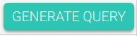
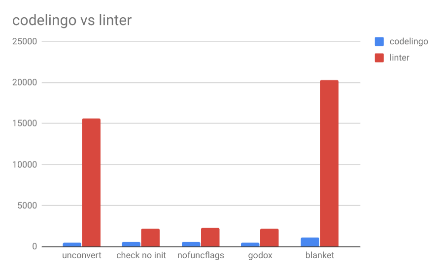

CodeLingo vs Linters
Making parsers for automatic code review
Table of Contents
1 CodeLingo vs Linters
I started learning Go and CodeLingo / CLQL at the same time, so while I have found it generally easy and straightforward to create these tenets, I feel like I could've knocked them out even faster if I didn't need to look up answers to questions such as 'what is an interface in golang?', for example. The process has been intuitive; I think in part to having a good naming convention. I've had to learn what CodeLingo is, what a 'tenet' and a 'flow' is. Long story short, they are just as what they sound like they are.
1.1 Defintions taken from the project docs
- tenet
A Tenet is an encoded project-specific best practice used to guide development.
(an encoded best practice)
- flow
A Flow is an automated development workflow that leverages Tenets to do some task, for example automating code reviews.
(an automated workflow)
1.2 The general process of writing one tenet
1.2.1 Writing the CLQL
The process of crafting CLQL is mainly subtractive, especially for simple tenets. What is simple to implement in CodeLingo may be difficult for 3rd party linters, however, as this write-up should demonstrate. Writing a tenet to describe an antipattern might be trivial in CLQL, but the corresponding linter may be orders of magnitude more complex.
The first step is usually to generate a verbose CLQL query from the CodeLingo playground. To do this you select the part of the code you would like to match and then click the generate1 button. The next step is to trefine that query into something that captures the logic of what you want a tenet to match. Typically, the generated query comprises the bulk of the code you end up with. You can therefore choose what to leave in, or add new logic, depending on the needs of the tenet.
1.2.2 Writing the unit test
- Obtaining test code for the
example.gofile
I found 'Go by example'2 a good place to both learn Go and to obtain test code for tenets. CodeLingo test code just looks like regular code, except it should contain the thing that the tenet is looking for, and that is usually an anti-pattern. Therefore, this is where you put deliberately bad code.
- Generating JSON for the "Expected results" file,
expected.json
After a review on the CLI, a JSON file is presented. You can just copy and paste this JSON code into a file called
expected.json.
1.3 Tenets made
| tenet name | linter name | time to write | total clicks |
|---|---|---|---|
| init | GitHub - leighmcculloch/gochecknoinits: Check that no init functions are present in Go code. | 10 mins | 1 |
| unconvert | unconvert/unconvert.go at master mdempsky/unconvert GitHub | ||
| nofuncflags3 | GitHub - fsamin/nofuncflags: a Go(lang) linter, because flag arguments are ugly | 10 mins | 1 |
- total clicks
- The number of times we needed to press generate query.
1.4 init
1.4.1 I started by visiting the CodeLingo Playground
A good way to start is by generating some CLQL for the thing you would like to match.
- Step 1: Generate some CLQL
- Write an init function into the Source Code: Go" section
func init() { }
- Click on Generate Query and copy the resulting CLQL code
- This is what the button looks like.

- This is what the generated CLQL looks like.
import codelingo/ast/go go.file(depth = any): go.decls: @playground.highlight go.func_decl: go.ident: child_count == 0 name == "init" private == "true" public == "false" go.func_type: go.field_list: child_count == 0
- total clicks
- The number of times needed to press generate query
total clicks 1
- This is what the button looks like.
- Write an init function into the Source Code: Go" section
- Step 2: Refine the CLQL
import codelingo/ast/go go.file(depth = any): go.decls: go.func_decl: @ review.comment go.ident: name == "init" go.func_type: go.field_list: child_count == 0
- Actions
- Remove
@playground.highlight - Add
@ review.comment - Remove things that are not relevant to our query.
- The first
child_countwas taken out because we can see that a function definition (go.func_decl) with identifier name equal to "init" (go.ident:name == "init") is enough to describe a function with name "init". The second
child_countwas left in because we'd like to match "init" functions that do not take any parameters.child_count == 0
The visibility assertions in this case are not neccessary. Usually we want the tenet to be able to generalise.
private == "true" public == "false"
- The first
- Remove
- This is the diff of the refinement we made to the CLQL
5d4 < @playground.highlight 6a6 > @ review.comment 8d7 < child_count == 0 10,11d8 < private == "true" < public == "false"
- Actions
1.4.2 The tenet
After indenting with 6 spaces (3 indents), I copied the CLQL into the query: section of a new codelingo.yaml file.
The codelingo.yaml file is the file you might simply call the 'tenet'.
tenets: - name: init doc: | Check that no inits functions are present in Go code. flows: codelingo/review: comment: Init functions cause an import to have a side effects, and side effects are hard to test, reduce readability and increase the complexity of code. query: | import codelingo/ast/go go.file(depth = any): go.decls: go.func_decl: @ review.comment go.ident: name == "init" go.func_type: go.field_list: child_count == 0
There are 3 more files that typically go into making a full-featured tenet.
- DONE
filename purpose codelingo.yamlThe effectual bit. A description of what the tenet does + the code to make it happen. - TODO
filename purpose example.goExample of broken code, which is found by the tenet. this and expected.jsoncomprise a unit test for the tenet.expected.jsonExpected output of the CodeLingo reviewer. README.mdAn explanation of what bundle this tenet belongs to.
1.4.3 The test code, example.go
package code var myVar = 0 type S struct{} func (s S) init(arg string) bool { yourVar := true return yourVar } var theVar = true type S struct{} const constant = 0 func function(arg string) bool { yourVar := true return yourVar } func init() { } type S struct{} func function() { init := func() {} init() } var _ = 0
1.5 unconvert
1.5.1 Visit the CodeLingo Playground
- Generate some CLQL
- Write the antipattern into the Source Code: Go" section
We dont want to use the
float64()type-conversion function on a variable we already know is a float. Honestly, this wasn't hard to write.func main() { var f float64 fmt.Printf("%t\n", !math.IsNaN(float64(f))) }
- Click on Generate Query and copy the resulting CLQL code
- Write the antipattern into the Source Code: Go" section
1.5.2 The tenet
tenets: - name: unconvert doc: | Identify unnecessary type conversions flows: codelingo/review: comment: Unnecessary type conversion {{name}}; i.e., expression {{name}}(x) where x already has type {{name}}. query: | import codelingo/ast/go go.file(depth = any): go.call_expr(depth = any): go.ident: @ review.vars.name name as typeName go.args: @ review.comment go.ident: type == typeName
1.5.3 The test code
package main import "fmt" import "math" func main() { var f float64 var f32 float32 var f64 float64 fmt.Printf("%t\n", !math.IsNaN(float64(f))) fmt.Printf("%t\n", !math.IsNaN(float64(f32))) fmt.Printf("%t\n", !math.IsNaN(float64(f64))) }
1.6 tenet vs nofuncflags
1.6.1 original CLQL query
import codelingo/ast/go go.file(depth = any): go.decls: go.func_decl: go.func_type: go.field_list: @playground.highlight go.field: go.names: go.ident: child_count == 0 name == "aFlag" private == "true" public == "false" type == "bool" go.ident: child_count == 0 name == "bool" private == "true" public == "false"
1.6.2 refined CLQL query
import codelingo/ast/go go.func_decl(depth = any): go.func_type: go.field_list: go.field: go.names: @ review.comment go.ident: type == "bool"
1.6.3 CLQL query written by Blake
import codelingo/ast/go @ review.comment go.func_decl(depth = any): go.func_type: go.field_list: go.field: go.names: go.ident: type == "bool"
1.6.4 Difference between Blake's query and my own
The only difference between our queries was the position of the @ review.comment.
2a3 > @ review.comment 8d8 < @ review.comment
1.7 Results
1.7.1 Comparison of size in code between tenets created and the linters I modelled them from
- Parser
Lines (CL) Lines (L) Words (CL) Words (L) Bytes (CL) Bytes (L) Byte % (CL/L) Tenet name (CL) linter name (L) 18 681 49 2084 524 15616 3.36% unconvert unconvert 19 110 64 275 580 2198 26.39% init gochecknoinits 18 136 67 353 623 2307 27.00% bool-param nofuncflags 18 137 63 310 512 2168 23.62% todo godox 42 753 115 2387 1154 20307 5.68% tested blanket 
- CL
- CodeLingo
- L
- Linter
- Unit tests
Lines (CL) Lines (L) Words (CL) Words (L) Bytes (CL) Bytes (L) Byte % (CL/L) Tenet name (CL) linter name (L) 13 N/A5 25 N/A5 246 N/A5 N/A5 unconvert unconvert 32 201 64 407 333 3167 10.51% init gochecknoinits 16 24 27 36 166 261 63.60% bool-param nofuncflags 29 130 80 407 440 3000 14.67% todo godox 14 124 25 185 156 1229 12.69% tested blanket - N/A
- The original linter did not contain unit tests.
- Links to source code
tenet name linter name tenet code forge linter code description init gochecknoinits codelingo.yaml GitHub leighmcculloch/gochecknoinits Check that no init functions are present in Go code. unconvert unconvert codelingo.yaml GitHub mdempsky/unconvert Remove unnecessary type conversions from Go source bool-param nofuncflags codelingo.yaml GitHub fsamin/nofuncflags because flag arguments are ugly todo godox codelingo.yaml GitHub 766b/godox extract speficic comments from Go code based on keywords tested blanket codelingo.yaml GitLab verygoodsoftwarenotvirus/blanket a coverage helper tool
1.7.2 The work it took to write these tenets
| tenet name | time to write | min clicks | actual clicks6 | reason for generate query1 click/s | reason for time spent greater or less than 10 mins |
|---|---|---|---|---|---|
| init | 10 mins | 1 | 1 | to find an initial fact for a top-level init function | |
| unconvert | 20 mins | 1 | 2 | to generalise unit test to any type conversion | to create string variable to match function name with ident type |
| bool-param | 5 mins | 1 | 1 | to generate initial query | the generated query was ~= the finished tenet |
| todo | 10 mins | 1 | 1 | to find the CLQL fact for comment | |
| tested | 20 mins | 1 | 2 | to find the initial query for a filename with identifier | learning to use CLQL functions |
- min clicks
- The number of times I needed to press generate query1 to discover the CLQL syntax I needed.
- actual clicks
- The approximate number of times I ended up to pressing generate query, for exploratory purposes.
1.7.3 The work it took to write their unit tests
| tenet name | time to write6 | generate1 clicks6 | additional time | reason for additional time | tests7 | reason for additional tests |
|---|---|---|---|---|---|---|
| init | 10 mins | 1 | 2 | |||
| unconvert | 10 mins | 2 | 10 mins | to find example code for unit test | 2 | |
| bool-param | 5 mins | 1 | 2 | |||
| todo | 10 mins | 1 | 2 | |||
| tested | 20 mins | 1 | 4 | ensure multi-file unit tests are working as expected |
1.7.4 Read the full article here.
1.7.5 Conclusions
Even though this tenet was already made by blake, it took no longer than 10 minutes for myself, a total newbie, to make.
What's even more astonishing is our queries are functionally equivalent and that CLQL is clever enough to do what we both mean with regards to the position of the comment.